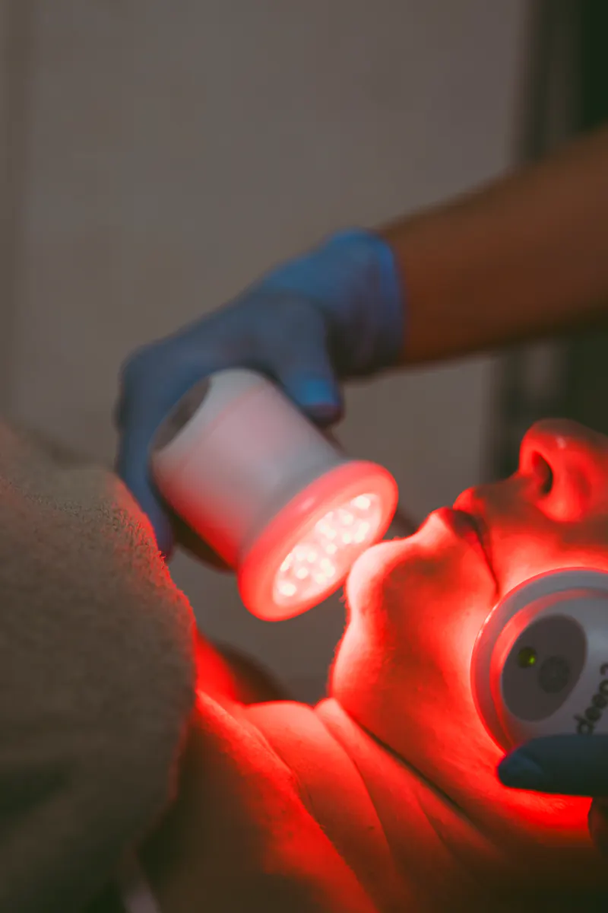

La fototerapia LED utiliza luz de distintas longitudes de onda sobre la piel. No es un tratamiento principal, pero es un buen complemento.
Cómo la usamos en BELSA
Trabajamos con equipos como Mei Light Therapy de Naqua y FHOS, y con accesorios como casco, máscara y gafas, al final de tratamientos faciales o capilares.
Cuándo tiene sentido
- Después de una higiene facial avanzada.
- Como apoyo en programas para piel con tendencia acneica.
- Como complemento de tratamientos capilares.
Qué no esperar
La luz LED acompaña, pero no sustituye a un tratamiento indicado para tu caso.
Este artículo es divulgativo.